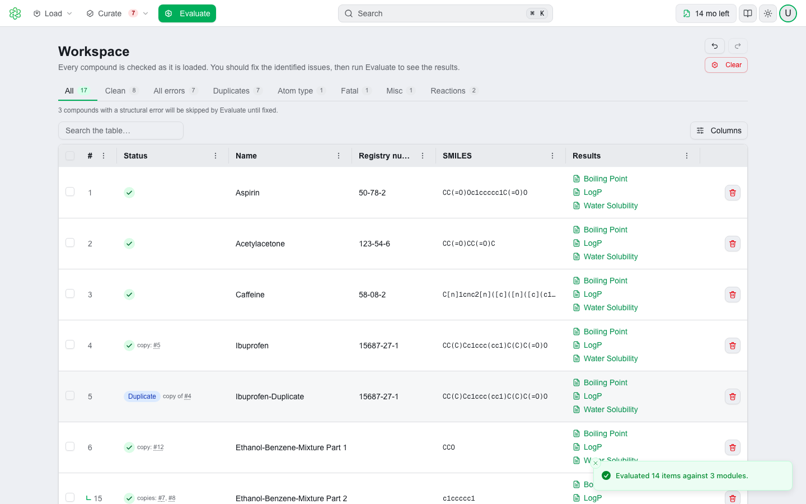
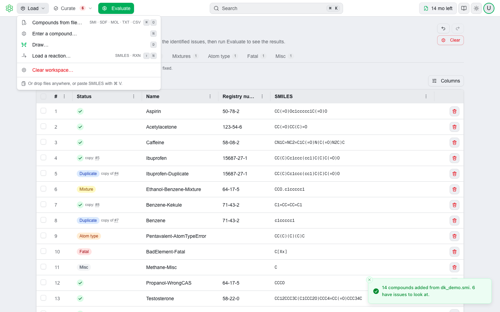
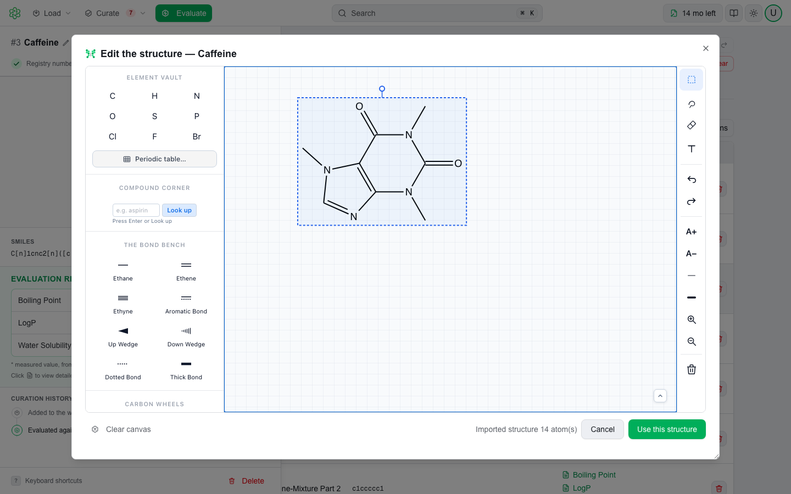
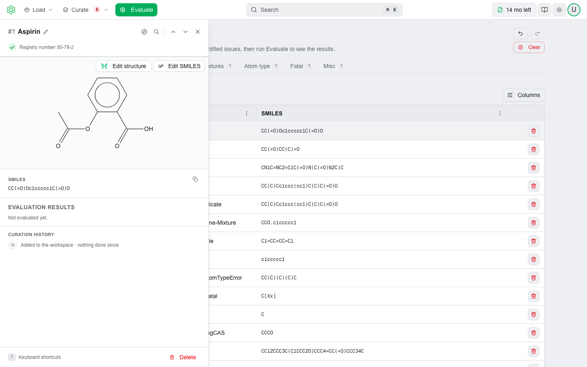
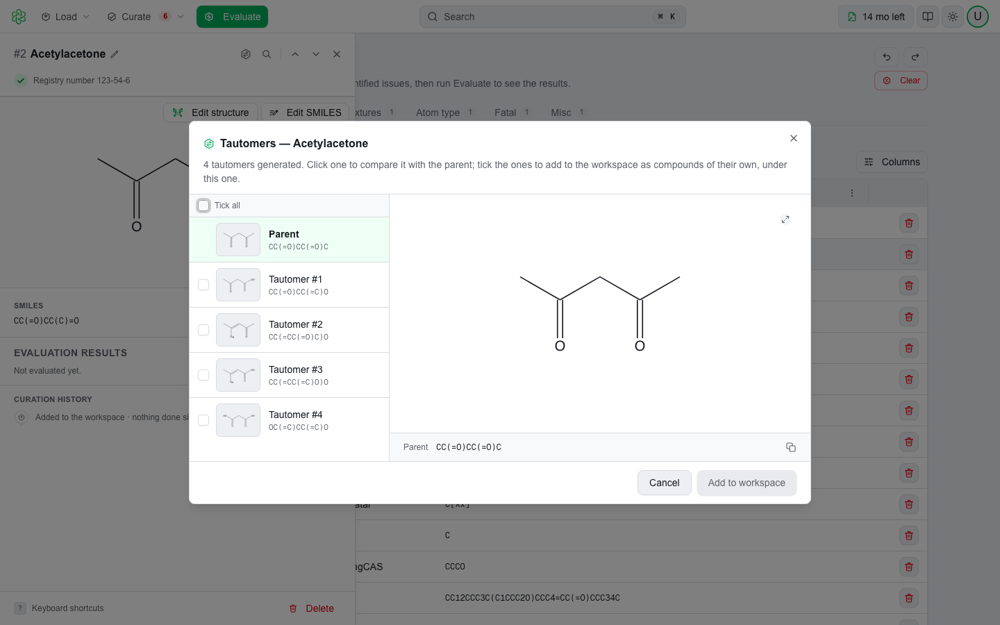
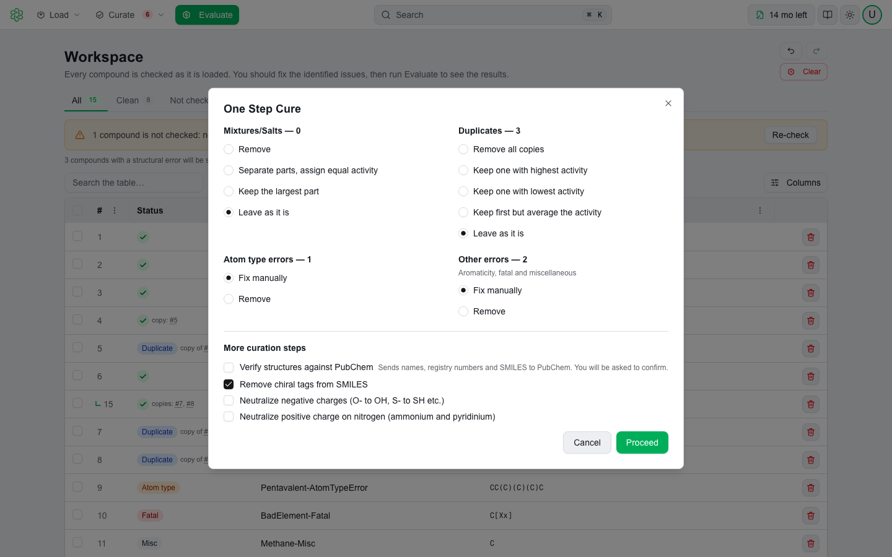

Predictive chemistry for impurities, degradants and drug substances. Build a library, curate it, and evaluate it against MultiCASE models for nitrosamine potency, ecotoxicity, physicochemical properties and ADME. Each prediction is backed by a report with the evidence behind it, on the web or on your own machine.

QSAR Flex is a workbench, not a single calculator. Assemble a library of molecules, curate them, choose models to support your investigation, and review your predictions, for one impurity or a few thousand.
A module is not always a regression. The engine carries:
The Basis column of the model catalog, later in this brochure, says which kind each module uses.
Evaluate opens a dialog that lists every module your license covers, grouped by bundle, and tells you how many compounds are in the workspace and how many still have issues. Tick what you need and run; each compound and reaction goes against every module you chose.
Applicability domain is checked explicitly, by similarity to the nearest training-set neighbors or by looking for fragments of your query that the training set never covered. An outcome outside the domain is labeled out of domain in the report rather than quietly returned as a number. When the domain is assessed by fragments, the unmodeled part of the molecule is identified, so you can see which part of the structure the model has never seen.
| Compound | Module | Outcome | Evidence in the report |
|---|---|---|---|
| Nitrosamine impurity | CPCA Prediction | Potency category and acceptable intake | Decision flow-chart; activating and deactivating features marked on the structure |
| Nitrosamine impurity | Surrogate Search | Up to 5 surrogates | TD50, species, reliability score and the regulatory acceptable intake for each surrogate |
| A set of NDSRIs | Cross Similarity | N×N similarity matrix | Every pair scored against every other, so related impurities group into classes |
| Synthesis route | N-Nitrosation | Risk per step | Nitrosamines formed at each step, scavengers and catalysts found, literature references |
One file, nothing to unpack. A report is a single self-contained HTML file with its structures drawn inline, and the software, version and run date recorded. Save as PDF from the report itself and it becomes a PDF fit for a dossier.
4.0 rebuilds the entire user interface. The models, the endpoints and the numbers they return are unchanged. This release is about how quickly you can get a library in, get it clean, and get the answer out.
The web application, the Windows desktop and the macOS desktop render the same interface. A single bar carries Load, Curate and Evaluate, the command bar, your license status, and a light or dark theme that follows your system.

⌘K, or Ctrl K, opens a search over every action in the product. Commands work from any page: run Evaluate from your Account page and you are taken to the workspace and it fires on arrival. Actions that are not available are still listed, grayed, with the reason why.
A status chip in the bar shows tests remaining, or Unlimited, or that a license has expired. The Account page gathers Profile, Security, License and Team into one place, so a question about entitlement no longer needs an email.
Support moves to support.multicase.com, a site of its own, signed in with the same MultiCASE account you use for QSAR Flex. Raise a ticket against a specific product, attach the files that show the problem, and follow the thread with the status visible instead of guessed at.
Draw a compound instead of typing it, or open a flagged compound and correct it on the canvas. The same engine that checks and evaluates your compounds reads what you draw, and ChemiGraphy draws every structure you see, on screen and in every report.

Every compound is checked as it arrives and wears its verdict on the row; a panel beside the table holds the structure, the finding and the fix. Every change can be undone and redone by name, and One Step Cure shows how many rows each choice affects before you commit.

Unchanged in 4.0. Every model, every endpoint, every record count and every number a model returns. License types are unchanged too: subscription and pay-per-test, individual or enterprise. A prediction you validated in 3.x returns the same answer in 4.0.
A model can only be as good as the structure you hand it. QSAR Flex checks a set the moment it loads, tells you exactly what is wrong with each row, and gives you bulk and single-row tools to fix it, with undo behind every change.
Every row is classified as it loads, and a row can carry more than one finding: Mixture, Duplicate, Atom type, Aromaticity, Fatal, Misc, and after a PubChem check CAS mismatch and Name mismatch. The chip row above the table counts each class, and a click shows only those rows.

The check never contacts PubChem. Any lookup, whether a single row or the whole set, first raises a dialog naming exactly what would be sent, and waits for you to agree. Elsewhere, the Auto Fill button in Enter a compound looks a compound up only when you press it.
One dialog, four decisions, each showing how many rows it applies to. Mixtures and salts can be removed, separated into their components, or reduced to the largest part by atom count. Duplicates can be removed outright or collapsed to one row per group. Atom-type and other errors can be removed or left for manual repair. A further section adds optional passes: strip chiral tags, neutralize negative charges, neutralize positive charge on nitrogen, and verify structures against PubChem.

Sixteen modules in four bundles; a license grants every module or a named list. Basis says what kind of answer each gives, because that decides how a result is used and defended.
| Module | Basis | Records | Available | What it does |
|---|---|---|---|---|
| Nitrosamine bundle · N-nitrosamine impurity assessment | ||||
| CPCA Prediction | Rule-based | — | Web · Desktop | A potency category for each N-nitrosamine center from its α-hydrogen count and its activating and deactivating features; the most potent sets the acceptable intake. |
| Surrogate Search | Read-across | 209 | Desktop only | Surrogates with animal carcinogenicity data, matched on the nitrosamine center's local environment. |
| N-Nitrosation | Rule-based | — | Web · Desktop | Whether a compound, or any step of a route, can form an N-nitrosamine under manufacturing conditions. |
| Cross Similarity | Similarity | — | Desktop only | A full N×N structural similarity matrix across the library, for grouping NDSRIs by class. |
| Ecotoxicity bundle · adverse impact on the natural environment | ||||
| Fathead Minnow 96h LC50 | Statistical QSAR | 920 | Web · Desktop | Acute toxicity to Pimephales promelas over 96 hours. |
| Daphnia 48h LC50 | Statistical QSAR | 2,124 | Web · Desktop | Acute toxicity to Daphnia magna over 48 hours. |
| Tetrahymena 48h GC50 | Statistical QSAR | 1,898 | Web · Desktop | 48-hour growth concentration causing 50% inhibition. |
| Algae 72h EC50 | Statistical QSAR | 1,377 | Web · Desktop | 72-hour algal growth inhibition, required for EU environmental classification. |
| Bio Concentration Factor | Statistical QSAR | 563 | Web · Desktop | How readily a compound accumulates in aquatic organisms relative to ambient water. |
| Ready Biodegradability | Statistical QSAR | 1,443 | Web · Desktop | Aerobic biodegradation within 28 days, per OECD Test 301. |
| Soil Adsorption | Statistical QSAR | 651 | Web · Desktop | Organic carbon-normalized soil adsorption coefficient (Koc). |
| Physicochemical bundle · formulation, bioavailability and environmental fate | ||||
| LogP | Experimental, then QSAR | 12,645 | Web · Desktop | Octanol–water partition coefficient. |
| Water Solubility | Experimental, then QSAR | 3,800 | Web · Desktop | Water solubility at 25 °C. |
| Vapor Pressure | Experimental, then QSAR | 1,829 | Web · Desktop | Vapor pressure at 25 °C. |
| Boiling Point | Experimental, then QSAR | 4,890 | Web · Desktop | Boiling point of organic compounds. |
| ADME bundle · systemic availability after oral exposure | ||||
| Oral Bioavailability | Four methods | 1,594 | Web · Desktop | Oral bioavailability four ways (measured data, close analogues, a QSAR model, a rule) plus microsomal stability, CYP3A4 / CYP2D6 / CYP2C9 and P-gp substrate potential, formulation sensitivity and a BCS class, in one report. |
Routes, not just structures. Give N-Nitrosation a multi-step synthesis as reaction SMILES or MDL RXN files and it nitrosates every amine in every step, so you learn which intermediate gives rise to which nitrosamine. It resolves reagents by SMILES, InChI, acronym, name or registry number, flags nitrite scavengers and catalysts, and cites similar nitrosation reactions from the literature.
The interface is identical in both. What differs is where the models run and where the reference data they consult lives. On the web, structures are transmitted securely for the length of an evaluation and are not retained or viewed by anyone at MultiCASE. The desktop build evaluates entirely on your own machine, so your structures never leave it.
| Web application | Desktop | |
|---|---|---|
| Runs on | Any modern browser | Windows x64 · macOS 12+ (Apple Silicon) |
| Where the models run | MultiCASE cloud | Your machine |
| Reference database | Hosted by MultiCASE | On your machine |
| Do structures leave the machine? | Only for the length of an evaluation | No |
| First-launch download | None | About 4 GB, models and reference database |
| Desktop-only modules | Not available | Available |
| Works offline | No | No |
| Kept current | Automatically | In-app updates, no admin rights |
| Licensing | What you are choosing between |
|---|---|
| Subscription | One price for a fixed term. Unlimited testing during that time. |
| Pay-per-test | A pool of tests drawn down as you go. A run costs your library size times the number of bundles selected; the balance shows in the navigation bar. |
Enterprise licenses can be managed internally by your own team: assigning seats, creating users and activating the license, without involving MultiCASE. Every evaluation is recorded against the license with the user and the modules, and administrators read that history in the product. The structures themselves are never part of that record.
Request access, or ask for a demonstration. Not ready to deploy? MultiCASE also offers evaluation as a service: send us a structure list or a synthesis scheme and we return the same reports the product generates, with no installation and no license. Your IT team's questions are answered in the companion IT Requirements & Deployment Guide on resources.multicase.com.